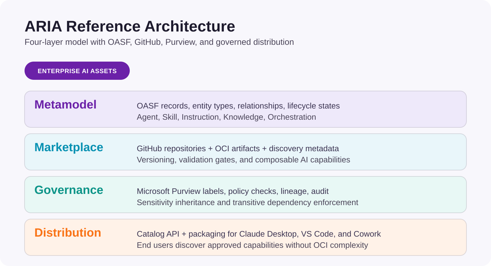
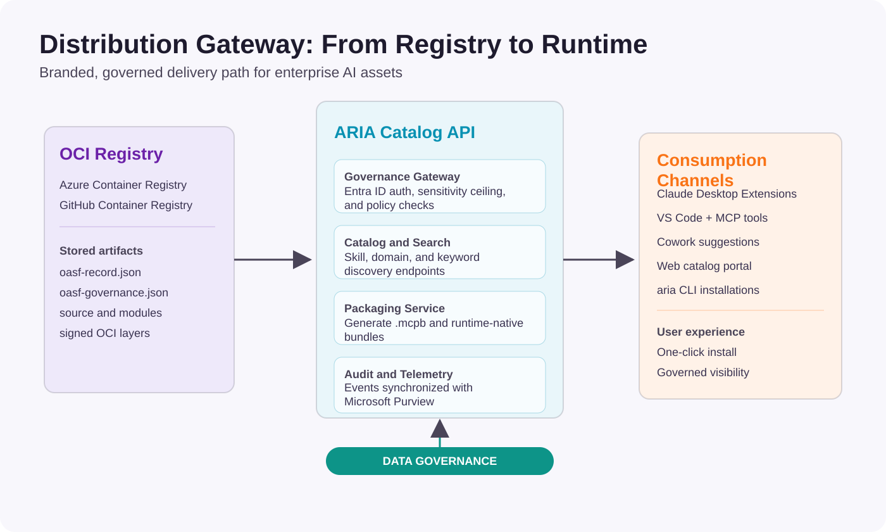

Executive Summary
Enterprises are rapidly accumulating AI primitives — agents, skills, instructions, knowledge bases, and orchestration configurations — without a standardized metamodel for classifying, governing, and composing them. ARIA (Asset Registry for Intelligent Agents) presents a four-layer reference architecture: the Open Agentic Schema Framework (OASF) as the classification taxonomy, GitHub as the canonical marketplace and registry, Microsoft Purview as the governance and compliance layer, and a distribution layer for governed end-user delivery.
The architecture draws on the metamodel tradition of TOGAF’s Architecture Content Framework, adapting it to the unique requirements of AI asset management: versioned, composable primitives with sensitivity-aware lineage and automated compliance enforcement.
Problem Statement
- AI assets (agents, MCP servers, prompt libraries, RAG corpora) are proliferating without inventory, classification, or governance
- No standard metamodel exists for describing relationships between AI primitives the way TOGAF describes IT architecture building blocks
- Sensitivity labeling, data lineage, and compliance enforcement do not yet extend to AI-specific artifacts
- Teams cannot discover, reuse, or compose AI primitives across organizational boundaries safely
Solution Overview
| Layer | Function | Implementation |
|---|---|---|
| Metamodel | Entity types, relationships, lifecycle states for AI primitives | OASF Records, Skills, Domains, Modules |
| Marketplace | Publish, discover, version, and compose AI primitives | GitHub repos + OCI registry + OASF manifests |
| Governance | Classify, label, enforce, and audit AI asset usage | Microsoft Purview + OASF overlay policies |
| Distribution | Deliver governed assets through end-user channels | Catalog API + bundle packaging + channel adapters |

The ARIA Metamodel
Inspired by TOGAF’s Architecture Content Framework, this metamodel defines the entity types that constitute an enterprise’s AI capability inventory. Each entity is classified using OASF’s attribute-based taxonomy and stored as an OASF Record with skills, domains, and module annotations.
Core Entity Types
| Entity Type | OASF Classification | Description | Examples |
|---|---|---|---|
| Agent | Record (primary) | Autonomous or semi-autonomous AI unit with defined capabilities, identity, and lifecycle | Copilot agent, CrewAI crew, AutoGen group, A2A agent |
| Skill | Skill annotation | Discrete, reusable capability that an agent can invoke | MCP server, function tool, API connector |
| Instruction | Module (prompt_bundle) | System prompt, guardrail set, or behavioral configuration | System prompt, safety rules, persona config |
| Knowledge | Module (knowledge_base) | Structured or unstructured data corpus for grounding and retrieval | RAG index, embeddings store, document collection |
| Orchestration | Module (orchestration_config) | Composition and routing logic connecting agents, skills, and knowledge | Agent mesh config, routing DAG, workflow definition |
Entity Relationships
| Relationship | Source | Target | Cardinality | Governance Implication |
|---|---|---|---|---|
| invokes | Agent | Skill | 1:N | Agent inherits sensitivity ceiling of invoked skills |
| governed_by | Agent | Instruction | 1:N | Instruction version pinning required for compliance |
| grounded_in | Agent | Knowledge | 1:N | Data classification of knowledge propagates to agent outputs |
| composed_by | Orchestration | Agent | 1:N | Orchestration inherits highest sensitivity of member agents |
| depends_on | Skill | Skill | N:M | Transitive dependency chain affects blast radius analysis |
| extends | Module | Record | 1:N | Extension modules must pass schema validation |
OASF Record Structure
Every entity in the metamodel is represented as an OASF Record containing identity, classification metadata, capability annotations, and governance envelope:
- name: Unique identifier using
domain-based naming (e.g.,
xebia.com/agents/onboarding-assistant) - version: Semantic version enabling dependency resolution and rollback
- schema_version: OASF schema version for forward compatibility
- skills: Array of OASF skill taxonomy references describing capabilities
- domains: Business domain annotations for discovery scoping
- modules: Extensible metadata blocks (MCP descriptors, evaluation metrics, prompt bundles)
- locators: References to source code, container images, or service endpoints
- authors: Ownership chain for accountability and approval routing
- created_at / updated_at: Temporal anchors for audit and lifecycle tracking
Lifecycle States
| State | Description | Allowed Transitions | Governance Gate |
|---|---|---|---|
| Draft | Asset under development, not discoverable | Draft → Review | None (author workspace) |
| Review | PR submitted, OASF validation passing | Review → Published / Draft | CODEOWNERS approval + schema validation |
| Published | Active in registry, discoverable and invocable | Published → Deprecated / Review | Purview sensitivity label assigned |
| Deprecated | Marked for sunset, consumers warned | Deprecated → Archived | Migration plan required |
| Archived | Immutable record preserved for audit | Terminal | Retention policy enforced via Purview DLM |
Enterprise Capability Model
For an enterprise to successfully manage AI assets at scale, it needs capabilities across six domains.
| Domain | Capabilities | Maturity Indicator |
|---|---|---|
| Asset Inventory & Classification | Discover, catalog, and classify all AI primitives using a standardized taxonomy | All AI assets registered with OASF Records |
| Lifecycle Management | Version, publish, deprecate, and archive with automated gating | Automated CI/CD validates OASF schema on every PR |
| Composition & Orchestration | Compose agents from skills and knowledge; resolve dependency chains | Orchestration configs reference only published, validated primitives |
| Governance & Compliance | Apply sensitivity labels, enforce DLP, track lineage, maintain audit trails | Purview labels auto-propagate through dependency graph |
| Discovery & Reuse | Search, filter, and consume AI assets by skill taxonomy or domain | Searchable registry with skill-based filtering active |
| Observability & Evaluation | Monitor performance, track metrics, detect drift, surface violations | OTEL telemetry + evaluation modules attached to published Records |
| AI FinOps & Cost Governance | Track per-asset costs across providers, enforce budgets, rate limits, chargeback | Per-asset cost attribution with budget enforcement middleware active |
Reference Implementation: GitHub as ARIA Marketplace
GitHub provides the foundation for the canonical marketplace due to its native support for versioning, pull request workflows, code review, branch protection, and GitHub Actions automation.
Repository Structure
aria-assets/
├── oasf-record.json # OASF Record manifest (required)
├── oasf-governance.json # Governance overlay
├── src/ # Asset implementation
├── tests/ # Validation and evaluation tests
├── docs/ # Usage documentation
└── .github/
├── CODEOWNERS # Governance-aware ownership
└── workflows/
├── oasf-validate.yml # Schema validation on PR
├── publish.yml # Push to OCI registry on merge
└── purview-sync.yml # Sync labels to PurviewOASF Record Manifest Example
{
"name": "xebia.com/agents/onboarding-assistant",
"version": "2.1.0",
"schema_version": "1.0.0",
"description": "HR onboarding agent with document generation and policy Q&A",
"skills": [
{ "id": 10101, "name": "nlp/nlu/intent_classification" },
{ "id": 30101, "name": "knowledge_retrieval/rag" }
],
"domains": [{ "name": "human_resources/onboarding" }],
"modules": [
{ "type": "mcp_server", "transport": "stdio", "tools": ["lookup_policy"] },
{ "type": "knowledge_base", "ref": "xebia.com/knowledge/hr-policies" }
],
"authors": ["Josh Garverick <josh.garverick@xebia.com>"]
}Governance Overlay Manifest Example
{
"governance": {
"sensitivity_tier": "confidential",
"data_classifications": ["PII", "PHI"],
"approval_chain": ["ai-governance-lead", "data-privacy-officer"],
"allowed_consumers": ["hr-team", "onboarding-automation"],
"max_data_retention_days": 90,
"audit_level": "full",
"dependency_sensitivity_ceiling": "highly_confidential",
"compliance_frameworks": ["HIPAA", "SOC2"]
}
}Microsoft Purview Integration
Microsoft Purview serves as the governance and compliance backbone, extending its existing data classification, sensitivity labeling, and DLP capabilities into the AI asset domain.
Sensitivity Label Inheritance
Purview’s sensitivity labels propagate through the AI asset
dependency graph. The inheritance rule is strict: an AI asset
inherits the highest sensitivity classification of any asset
it depends on. This is enforced at both CI time (the
oasf-validate action checks ceiling constraints)
and runtime (Purview DLP policies evaluate AI
interactions).
Integration Points
- AI Hub: Centralized visibility into active agents, skills, and knowledge bases
- Interaction Telemetry: Prompts and responses evaluated against Purview classifiers
- Insider Risk Management: Detection of anomalous AI usage patterns
- Data Map & Lineage: AI assets as first-class entities with relationship edges
- DLP Policy Enforcement: Block under-classified agents from accessing sensitive data
- Purview SDK: Embedded in Agent Framework SDK for shift-left governance
ARIA Package Manager
The aria CLI bridges the OCI marketplace with
developer runtimes.
Core Commands
| Command | Description |
|---|---|
aria search |
Discover assets by OASF skill taxonomy, domain, or keyword |
aria inspect <ref> |
Display OASF Record and governance overlay |
aria audit <ref> |
Validate sensitivity ceiling, consumer, and dependencies |
aria install <ref> |
Pull OCI artifact, enforce governance, install to target |
aria list |
List installed assets with version, sensitivity, and target |
Install Targets
| OASF Module Type | Target | Install Behavior |
|---|---|---|
| mcp_server | Claude Desktop | Add MCP entry to
claude_desktop_config.json |
| mcp_server | VS Code | Add to .vscode/mcp.json workspace config |
| mcp_server | Agent Framework | Register as MCP tool provider |
| Record (agent) | Agent Framework (A2A) | Register as remote A2A endpoint |
| knowledge_base | Agent Framework | Register with RAG pipeline configuration |
Distribution Gateway: From Registry to Runtime
OCI is the right storage and governance layer for AI assets — it provides content addressing, signatures, lineage tracking, and Purview integration. However, OCI is the wrong delivery layer for end-user consumption. Non-technical users should never need Docker, ORAS, or any registry tooling. The distribution gateway bridges this gap.
The Problem with Direct OCI Consumption
The ARIA marketplace stores AI assets as OCI artifacts in
Azure Container Registry or GitHub Container Registry. For
developer workflows (CI/CD, the aria CLI,
Terraform), OCI pull/push operations are natural. But
enterprise end users — business analysts, HR managers, hiring
coordinators — consume AI capabilities through platforms like
Claude Desktop and Cowork. These users think in terms of “I
need a capability,” not “I need to pull an OCI artifact.”
Architecture
The distribution gateway is a thin REST service that sits between the OCI registry and end-user platforms. It translates governed OCI artifacts into platform-native install experiences.
OpenAPI specification: distribution-gateway.openapi.yaml

ARIA Catalog API
The Catalog API serves the browsable, searchable catalog of governed AI assets. It reads OASF records from OCI manifests, transforms them into user-friendly listings, applies governance filtering based on the authenticated user’s identity, and supports search by skill taxonomy, domain, and keyword.
Key endpoints:
GET /catalog/assets— browse all assets the user is authorized to seeGET /catalog/assets?skill=knowledge_retrieval/rag&domain=human_resources— filtered searchGET /catalog/assets/{name}/versions— list versions of a specific assetGET /catalog/assets/{name}/{version}/manifest— full OASF Record + governance overlayPOST /catalog/assets/{name}/{version}/install— trigger governed install to a target platformPOST /catalog/assets/{name}/{version}/request-access— initiate approval workflow for blocked assets
Every request is authenticated via Entra ID. The API resolves the user’s team membership and sensitivity ceiling from Entra security groups, evaluates the OASF governance overlay, and filters results so users only see assets they’re authorized to install.
OpenAPI specification: catalog-api.openapi.yaml
Governance Gateway
The governance gateway is the policy enforcement point within the Catalog API. It operates on every catalog query and every install request:
- Authenticate the user via Entra ID
- Resolve the user’s team membership to determine their
consumer_id - Look up the team’s sensitivity ceiling from Entra group attributes
- Evaluate the asset’s governance overlay: check
allowed_consumersandsensitivity_tier - For install requests, scan transitive dependencies recursively
- Allow or block with a clear, actionable explanation
- Log the event to Purview audit trail
When a user is blocked, the gateway returns a structured response that includes the reason, the required approval chain from the governance overlay, and an action URL to initiate the approval workflow.
.mcpb Packager
For Claude Desktop and Cowork consumption, the distribution
gateway includes a packager that converts OCI-stored ARIA
assets into .mcpb (MCP Bundle) format on-the-fly.
Claude Desktop’s enterprise extension system already supports
.mcpb files with one-click installation,
organization allowlists, and admin controls.
The packager reads the OASF record’s
mcp_server module descriptor, extracts the server
configuration (command, args, transport, environment),
generates the .mcpb manifest with user
configuration prompts (API keys, endpoints), and bundles the
server implementation from the OCI artifact layers. The
resulting .mcpb file is served to Claude
Desktop’s Extensions panel as if it were a native desktop
extension.
For enterprise deployments, organization owners can configure the ARIA Catalog API as a custom extension registry in Claude Desktop’s admin settings. This replaces or supplements Anthropic’s public extension directory with the organization’s governed ARIA catalog. Users browse their organization’s AI assets directly in Claude Desktop’s Extensions panel, with governance enforcement happening transparently.
End-User Consumption Experiences
Claude Desktop: Enterprise Skills Marketplace
Claude Desktop already has an Extensions panel where users browse and install MCP servers. ARIA integrates with this existing infrastructure rather than replacing it.
The experience for an enterprise Claude Desktop user:
- User opens Claude Desktop → Settings → Extensions
- The Extensions panel shows their organization’s ARIA catalog alongside (or instead of) the public directory
- Each listing shows a plain-language name, description, the publishing team, capability summary (what tools it adds), and a trust badge based on the governance overlay (e.g., “Approved by IT Security,” “Internal Use Only”)
- User clicks “Add to Claude” on the policy-lookup skill
- Behind the scenes: the ARIA Catalog API authenticates via
their Entra SSO session, checks governance, generates the
.mcpbbundle from the OCI artifact, and pushes it to Claude Desktop - The skill appears in the user’s tool list. Done.
If the user is blocked by governance (not in
allowed_consumers, or their team’s ceiling is too
low), they see: “This skill requires HR team access. Request
access →” with a link that triggers the approval workflow
through the Catalog API.
Enterprise admins manage the catalog through the ARIA Catalog API’s admin endpoints or the Claude Desktop admin console:
- Upload custom
.mcpbextensions built from ARIA assets - Configure the allowlist — which ARIA assets are available to which Entra groups
- Block public extensions that conflict with governed alternatives
- Monitor extension usage and compliance posture via Purview
Cowork: Contextual AI Capability Discovery
Cowork is task-oriented rather than chat-oriented. Users work on files and workflows, and Cowork suggests relevant AI capabilities in context. ARIA integrates with this model through contextual discovery.
When a user is working on an onboarding workflow in Cowork, the ARIA Catalog API is queried with the user’s context (document type, domain keywords, current task). The API matches OASF domain annotations against the context and returns relevant assets that the user is authorized to use. Cowork surfaces these as suggestions: “The HR Policy Assistant can help with this. Add it?”
The governance filtering happens before the suggestion is
shown. If the user isn’t in the allowed_consumers
list or their team’s ceiling is insufficient, the asset is
never surfaced — no confusing blocked states, no dead-end
error messages.
Web Catalog Portal
For broader organizational visibility, the ARIA Catalog API powers a web-based catalog portal where anyone can browse the organization’s AI asset inventory. This serves multiple audiences:
- Business users browse by department and capability to find skills they can add to Claude Desktop or Cowork
- Developers search by OASF skill taxonomy to find assets to compose into new agents
- AI governance teams review the full inventory with sensitivity classifications, approval chains, and compliance framework coverage
- Compliance auditors generate reports on AI asset usage, classification distribution, and governance posture
The portal is a lightweight web application backed entirely by the Catalog API. It requires no special tooling — just a browser and an Entra ID login.
Approval Workflow for Blocked Installs
When any consumption channel (Claude Desktop, Cowork, web portal, aria CLI) encounters a governance block, the experience follows a consistent pattern:
- The user sees a clear explanation: “This asset is classified as Confidential and your team (Marketing) has an Internal ceiling”
- They see the required approval chain from the governance overlay: “Approval required from: AI Governance Lead → HR Data Steward”
- They click “Request Access” which calls the Catalog API’s request-access endpoint
- The API generates an approval request routed to the appropriate channel — Teams Adaptive Card, ServiceNow ticket, email, or a custom webhook defined in the governance overlay
- Approvers see the request with full context: who is asking, what asset, current classification, and the business justification
- Once approved, the user receives a notification and can retry the install
- The approval event is logged to Purview audit trail
AI FinOps: Cost Governance for AI Assets
Governance answers “are we allowed to use this?” but enterprise leaders also need to answer “can we afford to use this?” With GitHub’s move to usage-based billing and every AI provider metering by token, invocation, or seat, cost visibility and containment for AI assets is becoming as critical as sensitivity classification. ARIA extends the governance overlay with cost governance fields and introduces a metering framework that aggregates usage data across providers.
The Cost Visibility Problem
AI costs are scattered across multiple billing systems with no unified attribution to business outcomes:
- Azure OpenAI / AI Foundry — metered by tokens (input/output) per deployment, visible in Azure Cost Management
- GitHub Copilot — metered by seat (moving to usage-based), visible in GitHub billing API and Copilot Metrics API
- Anthropic Claude — metered by tokens per API key, visible in Anthropic Usage API
- OpenAI — metered by tokens per organization, visible in OpenAI Usage API
- MCP servers / custom skills — hosted on Azure Container Apps, AWS Lambda, or similar, metered by compute
An ARIA agent that uses Azure OpenAI for inference, invokes an MCP skill hosted on Container Apps, and grounds itself in a knowledge base indexed by Azure AI Search has costs in three different billing systems. No provider aggregates this today.
Cost Governance Overlay Extension
The OASF governance overlay is extended with a
cost_governance section that declares budget
constraints, rate limits, and cost attribution metadata:
{
"governance": {
"sensitivity_tier": "confidential",
"cost_governance": {
"budget_monthly_usd": 500,
"budget_alert_threshold_pct": 80,
"cost_center": "engineering-platform",
"chargeback_model": "per_invocation",
"rate_limits": {
"daily_invocations": 10000,
"monthly_tokens": 5000000,
"concurrent_sessions": 50
},
"cost_attribution_tags": {
"department": "hr",
"project": "onboarding-automation",
"aria_asset": "aria.dev/agents/onboarding-assistant"
}
}
}
}Key fields:
- budget_monthly_usd: Hard budget cap. The budget enforcement middleware blocks invocations when the asset’s month-to-date cost reaches this threshold.
- budget_alert_threshold_pct: Percentage of budget at which alerts are emitted (email, Teams, webhook).
- cost_center: Maps to the organization’s financial accounting structure for chargeback.
- chargeback_model: How costs are allocated
—
per_invocation(usage-based),per_seat(license-based),flat_rate(fixed monthly), orblended(combination). - rate_limits: Operational guardrails that prevent runaway consumption independent of dollar budget.
- cost_attribution_tags: Key-value pairs propagated to all downstream provider billing systems (Azure tags, AWS cost allocation tags) to enable cross-provider cost rollup.
Metering Module
The OASF record supports a metering module
type that declares what usage dimensions an asset emits and
where metering data flows:
{
"modules": [
{
"type": "metering",
"provider": "azure_cost_management",
"dimensions": ["tokens_in", "tokens_out", "invocations", "tool_calls", "latency_p95_ms"],
"export_target": "aria.dev/skills/cost-collector",
"billing_tags": {
"aria_asset": "aria.dev/agents/onboarding-assistant",
"aria_version": "2.1.0"
}
}
]
}The metering module enables the cost collector to discover which providers to query and what dimensions to aggregate for each asset.
Cost Inheritance
Cost inheritance follows the same dependency graph as sensitivity inheritance. An orchestration’s cost is the sum of its composed agents’ costs. An agent’s cost is its own inference cost plus the costs of all skills it invokes. The cost collector builds this rollup by traversing the OASF module refs.
Orchestration (total: $850/mo)
├── Agent A (inference: $300/mo)
│ ├── Skill 1 — MCP server hosting: $50/mo
│ └── Knowledge Base — Azure AI Search: $100/mo
└── Agent B (inference: $200/mo)
├── Skill 2 — MCP server hosting: $50/mo
└── Skill 3 — External API calls: $150/moBudget enforcement cascades: if Agent A’s budget is $400/mo, it doesn’t matter that the orchestration’s budget is $850 — Agent A is capped at $400 and its downstream skills are counted against that cap.
Provider Integration Matrix
| Provider | Usage API | Cost API | Per-Asset Attribution | Real-Time Metering |
|---|---|---|---|---|
| Azure OpenAI / AI Foundry | Azure Monitor metrics | Azure Cost Management | Via resource tags | Near-real-time via Monitor |
| GitHub Copilot | Copilot Metrics API (per-user, per-org) | GitHub Billing API | Per-seat/per-org | Daily aggregation |
| Anthropic Claude | Usage API (tokens per key) | Billing dashboard | Per-API-key | Per-request headers |
| OpenAI | Usage API (tokens per org) | Organization billing | Per-API-key | Daily aggregation |
| Azure Container Apps | Azure Monitor | Azure Cost Management | Via resource tags | Near-real-time |
| AWS Lambda / Bedrock | CloudWatch Metrics | AWS Cost Explorer | Via cost allocation tags | Hourly aggregation |
The cost collector normalizes all provider data into a common format using the OASF asset name as the join key, enabling cross-provider rollup per asset, per team, and per department.
Budget Enforcement Middleware
The ARIA Agent Framework middleware pipeline is extended
with a BudgetEnforcementMiddleware that sits
alongside the governance and Purview middleware:
Request
→ OasfGovernanceMiddleware (consumer validation, sensitivity ceiling)
→ BudgetEnforcementMiddleware (budget cap, rate limits)
→ PurviewPolicyMiddleware (DLP, compliance audit)
→ Agent executionThe budget middleware checks the asset’s
cost_governance fields against the current
month-to-date usage (cached from the cost collector). If the
budget or rate limits are exceeded, it returns a structured
denial similar to the sensitivity ceiling block:
{
"allowed": false,
"reason": "This agent has reached 95% of its monthly budget ($475 of $500). Remaining budget: $25. Contact your AI Platform team to request a budget increase.",
"budget_used_pct": 95,
"budget_remaining_usd": 25,
"action_url": "/catalog/assets/aria.dev%2Fagents%2Fonboarding-assistant/2.1.0/request-budget-increase"
}Cost Dashboard
The ARIA distribution gateway’s web catalog is extended with a cost dashboard that provides:
- Per-asset cost breakdown: inference tokens, hosting, API calls, storage — attributed by OASF asset name
- Per-team rollup: aggregated costs for all assets owned by or consumed by a team
- Per-department chargeback: cost center-level reporting for financial reconciliation
- Budget burn rate: current month spend vs. budget with projected end-of-month forecast
- Trend analysis: month-over-month cost trends per asset with anomaly detection
- Cost-per-interaction: blended cost per user interaction across all underlying providers
- Optimization recommendations: identify underutilized assets (high cost, low invocations) and over-provisioned resources
Implementation Roadmap
| Phase | Duration | Deliverables | Success Criteria |
|---|---|---|---|
| Foundation | 4–6 weeks | OASF server, governance overlay schema, GitHub template, validation Action | First asset registered with valid OASF Record |
| Marketplace | 6–8 weeks | OCI publish pipeline, Agent Directory, discovery channels, CODEOWNERS | Teams discover and consume assets through registry |
| Purview | 6–8 weeks | Label mapping, purview-sync Action, Data Map lineage, sensitivity propagation | Labels auto-propagate through dependency graphs |
| Distribution | 6–8 weeks | Catalog API, governance gateway, .mcpb packager, Claude Desktop enterprise integration, web catalog portal | Non-technical users browse and install governed skills from Claude Desktop Extensions panel |
| AI FinOps | 6–8 weeks | Cost governance overlay extension, cost collector skill, budget enforcement middleware, provider API integrations, cost dashboard | Per-asset cost attribution across providers with budget enforcement active |
| Runtime | 4–6 weeks | DLP enforcement, DSPM dashboards, insider risk, audit logging | Compliance team generates AI audit reports |
| Scale | Ongoing | Cross-team adoption, Cowork contextual discovery, eval framework, EU AI Act templates, federated directory | All production AI assets governed through ARIA |
Conclusion
Enterprise AI is at an inflection point. ARIA addresses the three questions every enterprise leader asks about AI adoption: “Are we allowed to use this?” (governance), “Can we afford to use this?” (AI FinOps), and “How do our people access it?” (distribution). The combination of OASF for classification, GitHub for marketplace operations, Microsoft Purview for governance, a distribution gateway for end-user consumption, and a cost governance framework for financial accountability creates a practical, implementable architecture that transforms AI asset management from ad hoc artifact accumulation into a governed, discoverable, composable, and economically sustainable ecosystem.
The key insight is that governance, cost controls, and user experience must all be embedded in the same workflow. For developers, the OASF Record and governance overlay — including budget caps and rate limits — are part of every pull request. For business users, the same controls run transparently behind Claude Desktop’s Extensions panel. For finance teams, per-asset cost attribution flows automatically from provider billing APIs through the OASF dependency graph. The governed path is the easiest path, the most cost-transparent path, and the most compliant path — which is what actually gets adoption at scale.